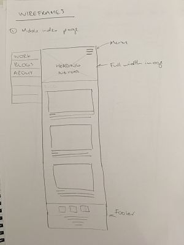
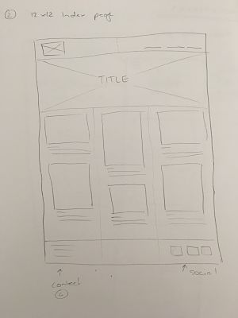
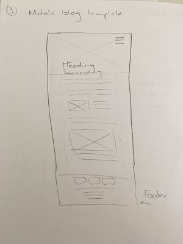
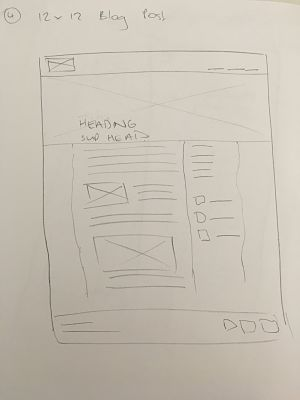

Responsive sites - Why are they so important?
Making a website responsive means users can view it on a range of different devices - from mobile phones, to tablets, to desktops - and the site will always look great and function exactly how it's supposed to. This is important due to the increased use of mobile phones and tablets for web browsing.
Mobile First Design
Mobile first design is almost like the extreme of responsive design - it means that instead of designing a site for a desktop computer - with a landscape orientation, large size screen, using a mouse to navigate etc - the site is designed first and foremost for a smartphone screen - portrait orientation, very small screen and using fingers to navigate. Considering mobile phones are now the most popular device worldwide for web browsing, it makes sense to design for these first, instead of desktops.

Frameworks
Frameworks are almost like design templates for websites. They provide a developer with all the basic code needed to create a website - from the basic structure of the html document to general styling for the CSS stylesheet, and simple javascript documents. There are many different frameworks available to use for your site, but one of the most popular is called Bootstrap, and was created by Twitter. This is a front-end framework that is designed to help make web development faster and easier.
The pros and cons to using frameworks are:
Pros
- Efficiency - being able to develop websites faster and easier
- Cost - for the user, as most frameworks are free, and the client due to increased efficiency
- Support - if things go wrong, there will be a support network behind the framework
- Cross-browser functionality - this is already done for you!
Cons
- Limitations - frameworks can potentially restrict your freedom in both design and functionality
- Less learning - due to half the work having already been done!
- Extra code - there will inevitably be code in the framework you don't need
Wireframes
A website wireframe is a visual guide that of a web page, showing it in very simplistic terms. Imagine a stick figure drawing of a person... a wireframe is a stick figure drawing of a web page. Wireframes are great tools to use when planning a new site or page - it allows you to break the page down into smaller sections and boxes and develop it in a systematic way.
   After implementing the above wireframes for my site re-design, the part that I found the most difficult was the responsive nav, as I could not find a solution for a mobile first responsive dropdown nav, without using Javascript.